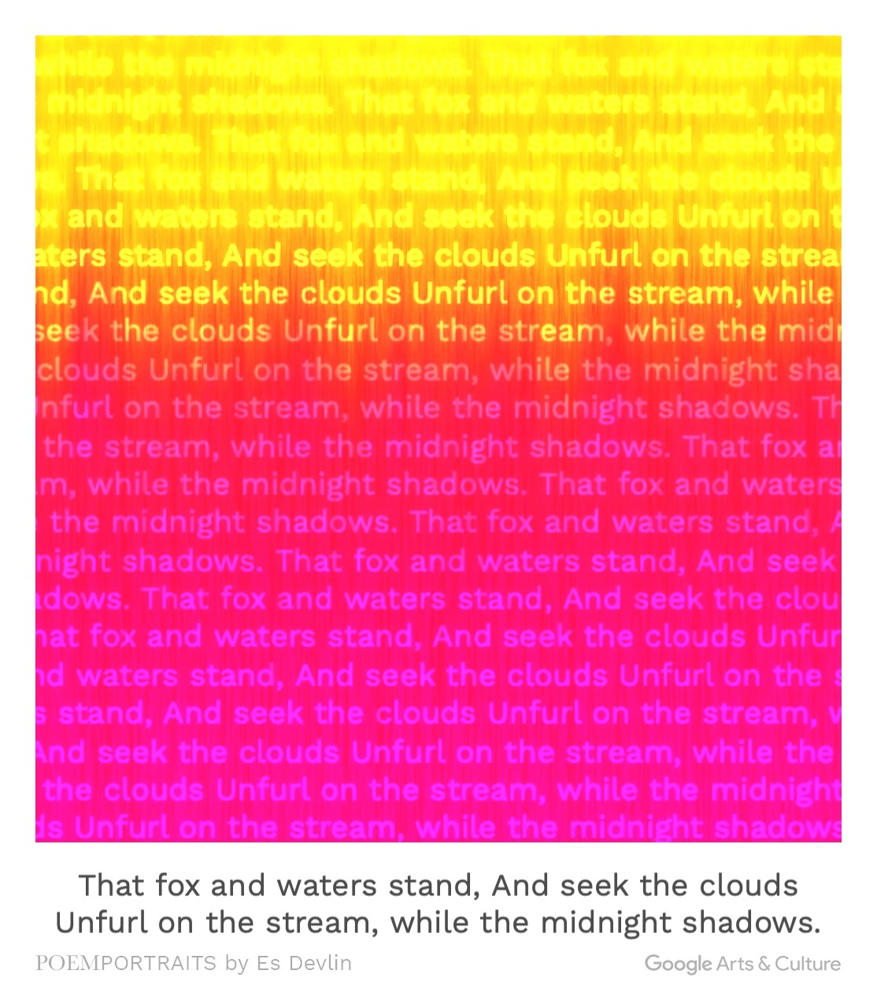

link: https://artsexperiments.withgoogle.com/poemportraits
The word that we enter: fox

From what I understand, it basically talks about a fox having water by a stream, this pasage also uses great
imagery since it's just a few lines but it makes the image very clear in your mind, a fox haxing water by a peaceful
stream at night. It's a really beautiful view but honestly it's not really my style, I think the app can try to make
more types and styles for us to pick from. Another disadvantage would be how it doesn't consider the readers' engligh
skill and they are practically all the same level. (Which caused my friend Leila had me write this for her.)
这篇故事梗概给使用者提供了充分的想象空间，用现代人喜爱的“狗血剧”剧情来吸引使用者的注意力，让没有想法的使用者们从中获取灵感，
唯一美中不足的是，所有的故事剧本都是固定的，即使换了名字也不会再次重新生成，而是换了个资料库里的固定剧本。
Five girls walked into the secret room in a special arrangement by a mysterious person, and the suspenseful past of youth that happened on campus that summer 15 years ago slowly emerged. A girl is caught in a rumor because of her beauty. The sexual buds of the girls and the original complex good and evil of human nature form a story of intertwined truth and fantasy.